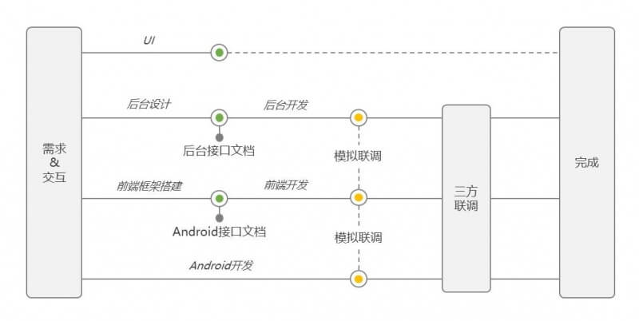

Hybrid app开发历程分享
首先,关于这个话题,本文并不准备详述移动开发相关的一些通用的技术,例如:viewport、rem、flexbox、媒体查询等。在这里，更倾向于讲述我们的hybrid产品策略、开发流程与规范、性能优化以及我们踩过的坑。而往往就是这些，网上相关的资料又是比较匮乏的。所以，希望通过此篇文章，跟大家分享一些我们团队关于hybrid产品的经验。
产品背景
- 我们希望这一类产品具备比较强大的运营能力
- 接口数据来自于cp数据整合，可能会有一定的差异性，甚至需要一定的容错能力
- 要求能够实现快速更新和迭代
Android与H5集成方案
在以上背景下面，我们最终选择了Hybrid App这个方案。 那么，接踵而来的问题就是，客户端该如何访问网页前端资源。能不能就采用以前浏览器访问服务器网页的方式呢？答案不是绝对的，你当然也可以采用上述的方式。根据不同的业务需求，方式总是会有不一样的。我们采用的最多的，是以下两个方案：
静态资源本地化
该方案，会先在app里面内嵌一份静态资源，然后在用户启动app或者访问html页面并且符合一定条件的情况下，会发送请求去后台，询问资源的情况。如果发现有更新，那么就把最新的资源下载到本地，然后接下来用户访问的都是本地的静态资源了。如果更新失败，那么他访问的就是内嵌的或者已经下载好的静态资源。
HTML 5 应用程序缓存
这个方案，其实就是采用HTML5的应用程序缓存（HTML5 Cache Manifest ）。在这里就不详述了，网上关于这个的资料很多。比较需要注意的点，就是manifest的配置文件，需要配置正确的MIME-type，即 "text/cache-manifest" 。
一般是在开发一些活动或者专题页面（上线时间短，ui变化多端）的时候，采用第二个方案。
而大多数的app页面都是相对稳定，或者说是迭代开发，定期更新的，具备规律性，这种情况下，我们采用的是第一个方案。当然，采用这个方案的时候，我们需要严格控制资源文件的大小，除了必要的压缩之外，还可以把长期固定的资源提取出来，提前内置到app里面。那么，用户每次更新资源时，只需要去服务器获取变化的部分，大大减小了流量使用。
以上两个方案，相对于每次都访问服务器静态资源来说，具有明显的优点：
- 离线访问
- 资源加载快
- 服务器负载低
页面加载
首先，客户端加载某页面，加载完成后（pagefinish）,客户端会调用前端提供的初始化方法（initParams）。通过该方法实现参数的传递和页面的初始化。
资源构建
我们目前使用fis3进行资源的压缩、合并、添加 md5 戳等构建功能，对于使用了es6的项目，还需要用到Babel。在此基础上，我们还开发了一些内部使用的基于fis3的插件。最终的目的，就是为了实现一条命令行，完成全部构建工作。
开发环境搭建
搭建本地web服务，使用的是nodejs+express。
开发流程

从上图我们可以看出，视觉设计、前端开发、客户端开发、后台开发都在很大程度上实现了并行开发。
接下来，简单描述一下前端开发怎么实现和后台，还有和客户端解耦，然后实现并行开发的。
首先，接口文档（后台接口文档和客户端接口文档）是不阻塞的前提。有了后台接口文档，我们就可以依此构建相应的假数据，并且模拟相应的接口请求。而有了android接口文档后，我们也可以模拟调用客户端接口，至少保证了基本的逻辑是顺畅的。所以，只要有了接口文档，在进行到真正的联调之前，前端、后台、客户端这3者都是独立开发，互不阻塞的。
然后联调的话分三个阶段：
模拟假数据联调
这个阶段的话其实只需要编写一些假数据在本地，然后用ajax请求就行了。而android接口的调用，也是模拟调用便可。在这一阶段，主要是为了确保前端逻辑基本跑通。
后台真实接口调用
到了这已阶段，我们需要的是访问本地静态资源，调用的却是远程服务器的接口。此种情况下，主要是要解决ajax的跨域请求问题。实现方式也挺多的，最简单的就是设置一下浏览器支持跨域。当然，你也可以使用nginx或者apache的反向代理来实现ajax的跨域请求。
三方联调
这一步，已经到了提测前的最后一个步骤了。这个时候，客户端已经和静态资源集成，然后调用的接口，无论是android接口还是后台服务器接口，都不再是模拟的了。
3种联调状态的切换，无论是在开发、bug定位、页面调试等情况下，都是经常需要使用的。比如你在修改某个js逻辑bug的时候，首先，你一般都是从第二种联调步骤开始的，毕竟在pc浏览器上面调试bug还是要方便挺多的。然后，等到bug改得差不多了，才会把静态资源push到手机上面，进行真机调试。
接下来就有一个问题了，如何实现这3种联调状态的灵活切换呢。首先，我们来看一段代码：
为了实现3种联调状态的切换，我们基于fis3开发了一个插件，这个插件的功能也很简单，就是处理上面这段代码。
如何处理呢，首先看一下上面这段代码，它可以分为两个模块，第一个是模拟代码模块（用<!-- dev start -->和<!-- dev end -->包起来）,第二个是真实代码模块（用<!-- min start --><!—和--><!-- min end -->包起来）。模拟代码模块包括了一个模拟android接口的js文件引入、假数据的路径以及模拟android调用初始化接口。真实代码模块可以写一些真正上线需要使用到的路径。这两个模块都不是必需的。
插件需要做的，就是把模拟代码模块去除，把真实代码模块释放。
再来说说这样做的好处，在模拟假数据联调的阶段，不需要使用到该插件，那么此时根据上面的那段代码，运行的就是模拟代码模块。而一旦我们要进行真正的接口联调的话，就需要在fis3的parser阶段调用该插件，以实现去除模拟代码并使用真实代码。而插件的使用，是在fis3的配置文件里面进行配置的，通过fis3的media api，我们可以实现动态控制插件是否使用。
性能优化和坑
这个是一个比较大的话题，像那些大家已经耳熟目染的雅虎十四条等页面优化准则和资料，那是非常之多。我在这里，会尽量从我们的项目角度出发，列举部分我们所做的优化和解决的一些难题。
图片
能不用的情况下，尽量不用。非得用的话，可以从多个角度进行优化。比如：
- 放在cdn，让资源离用户近一点，同时也减少了cookie等非必要数据的传输。
- 采用CSSSprites减少请求量。
- 使用webP，减少图片体积。
- 小的icon可以使用base64:URL图片。
- 有些情况，你是没办法从技术角度进行优化的，可能需要在尽量不影响用户体验的情况下，调整ui或者产品方案。比如ui同学设置了一个不规则模糊渐变的背景图片。那么这种情况下，就不得不通过保留模糊渐变，但是让其有规律性，这样可以通过截取小部分的图片，然后通过平铺的方式来实现了。有时候不得不做这样的权衡，选择一个折中的方案。
viewport
关于视口宽度的设置，目前比较通用的两种方式：
- 写死固定的宽度
- 设置为设备宽度
第一种方式，简单方便，不需要媒体查询，不需要rem等，一个版本，适配所有机型。而且，关于页面精细度的问题，当视口宽度设置的比较大的时候，线条、字体等可以实现更加精细化的控制。
而关于第二种方式，目前大部分大公司的移动端都是采用这种方式的。这种方式性能要比上一种高，毕竟少了一个缩放的过程，然后兼容性方面也是比较好的。
所以，经过上述比较后我们是比较推荐第二种方式的。但是，我们也发现，在和一些其他公司的人沟通过程，他们由于各种原因，还是采用了第一种方式。同时，我们也有一些项目，也是采用的第一种方式实现的。
而在采用第一种方式的情况下，我们发现，有些时候页面加载的时候，绘制效果不是很好，会有一个从左到右平铺的过程（其实就是一个缩放的过程）。关于这一点，其实是可以通过opacity的控制来优化效果的。
动画
动画这一块，想必就是hybrid app的一个痛点。想要在android内置的webview里面，实现和android差不多效果的动画，其难度实在是太难了，而且还会遇到挺多坑的。
比如，在做影院订座页面的时候，座位的选择区域是要能够进行缩放的。有了这个功能需求后，我们就要开始开发了。
关于缩放，我们首先想到的就是css3里面transform属性的scale值。接下来，我们就采用了scale方案进行开发。
动画开发的历程总是坎坷的，果然，问题出现了。选座区域的座位，在进行了手动放大后，变得相当的模糊。
也许你会想，是不是由于采用了图片，然后图片进行放大变得模糊，那也是情理之中的。好的，那么接下来，我们尝试着，直接使用css设置背景颜色的方式进行座位绘制。但是，这样做的结果是，放大的时候，还是模糊了。
在这种情况下，我们就需要静下心来思考一下了。到底是为什么呢。
在描述原因之前，先要引入另外一个古老的css属性zoom，并分别讲一下这两者的区别:
- zoom一开始只是ie浏览器的私有属性，后来大部分的浏览器都兼容了该属性的使用，但是毕竟还是没能写入规范。而scale则是写入w3c标准的。
- 渲染顺序不同。scale先宣染后缩放，zoom缩放后进行渲染。
- scale相关的控制参数较多，比如缩放原点、缩放方向等。而zoom默认的缩放原点就是左上角，然后也没有直接的参数能进行缩放原点的修改。
根据上面列举的几点区别，我们可以得出以下结论:
- 使用zoom进行缩放，视觉效果会变得锐利。而采用scale进行缩放，视觉效果会变模糊。
- 使用zoom进行缩放，可能会引起页面重排。而采用scale进行缩放，不会引起页面重排。
- 使用zoom进行缩放，受限于html渲染规则，比如字体最小是12px的话，你再怎么缩小，字体还是12px。而scale则不会。
接下来讲一下座位放大后变模糊这个问题应该怎么解决。根据以上结论，得出两个解决方案：
- 使用zoom进行缩放，这样就可以解决放大模糊的问题。
- 使用scale进行缩放，但是第一次的时候scale值设置得大一点，比如3（3倍大小）。然后再偷偷（setTimeout之类的）的把scale设置为1倍。
关于动画的优化，就先讲这一个列子，但是实际上，在我们的hybrid app开发过程中，还有很多的优化历程，当然也踩了很多的坑。有兴趣要了解的，可以试用一下魅族的生活服务，活动中心，电话黄页等app，这些都或多或少的使用了hybrid方案进行开发。
结语
现在的前端技术日新月异，我们也在不断的尝试一些新的技术（react、es6等），不断的扣一些细节，不断的优化又优化。这一切，不是短短一篇文章所能讲完的，期待下一次的分享。